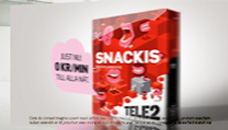

Welcome Ellen!
Miss Ellen Sundh has förstärkt our team som Senior Flash Developer. Ellen snodde vi från Great Works.
Welcome Ola!
Mr. Ola Björling has förstärkt our team som Interactive Producer. Ola snodde vi från Perfect Fools.
Jury duty calls
Mr. Joakim Kempff of Dallas sthlm has been trusted with a seat in the prominent Resumé Web Jury for 2009. Justice for all!
Electric!
New talent in the fields of animation and production supervision have arrived to strengthen our treat. On January 1, Jens Frid, Daniel Law & Ola Wikström were granted access all areas and a reasonable pile of work to dig in to. Welcome gentlemen!
Tele 2
Dallas sthlm is in collaboration with agency Forsman & Bodenfors on the currently running Tele2 - ”Born to be cheap” campaign. Dallas sthlm has designed and produced the endboards for all films communicating the Tele2 offer and product.
